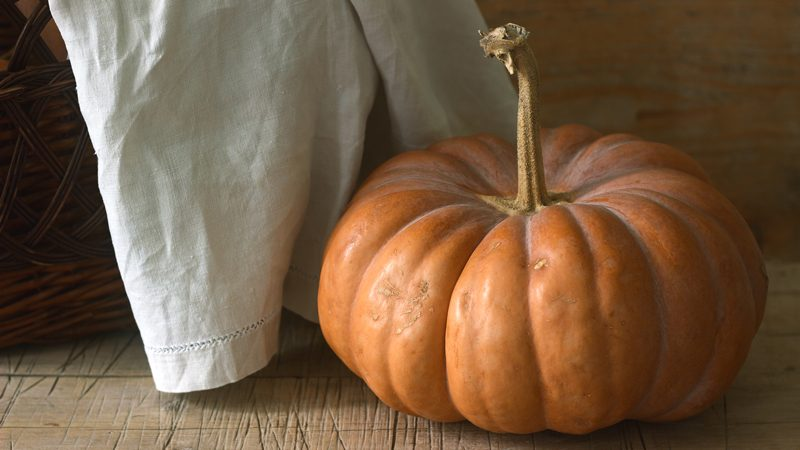
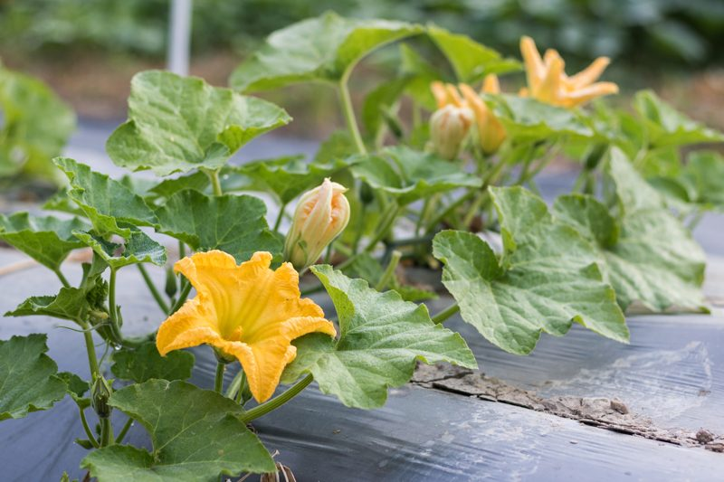
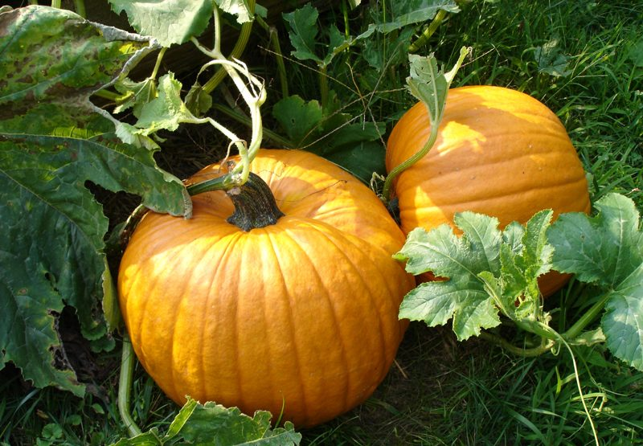
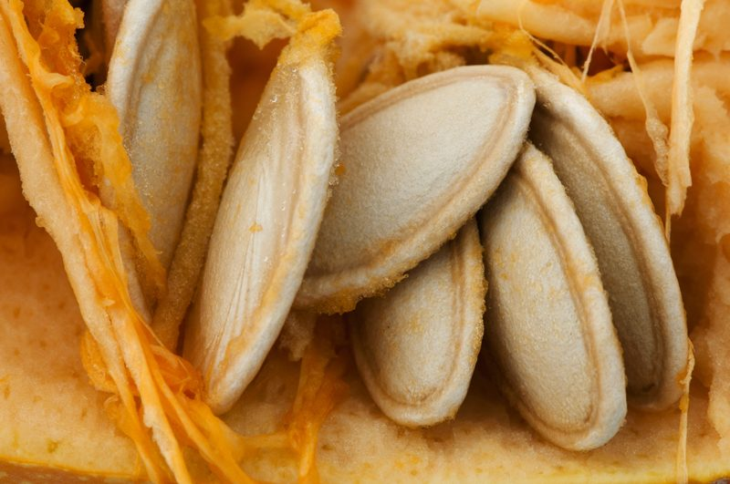

Pumpkins – They are Technically a Fruit
As many of you may know, I lived in Alaska for twenty-eight years. One of the great festivities that we looked forward to each year was the Alaska State Fair. One of the first stops that we would make was to see the award-winning cabbages and pumpkins. There is something about that Alaska mid-night sun that aids in growing gigantic vegetables. Last year they had a pumpkin weigh in at 1,469 pounds. That my friend will make a LOT of raw pumpkin pies.

Do you grow pumpkins? I read that the top six states for growing pumpkins in the U.S. are Illinois, Michigan, New York, Ohio, Pennsylvania, and California. I have always enjoyed pumpkins. From holiday decorating to making raw pumpkin cheesecakes, to making dehydrated pumpkin seeds… I can always find something to do with a pumpkin! So to acknowledge all that the pumpkin has to offer, I needed to understand how to grow it. There is nothing that gives me greater appreciation and love for the ingredients that I work with.
Before we dive into how to grow them, did you know that every single part of the pumpkin is edible? Yep, you can eat the skin, leaves, flowers, pulp, seeds and even the stem! The seeds can be boiled, toasted, or dehydrated. The leaves can be boiled or sautéed. The flowers can be stuffed or sautéed (pull out centers first). The flesh can be enjoyed raw, baked, boiled, steamed, or fried and used as a vegetable or as a dessert. And lastly, the skin is edible, but will generally be too tough unless it is a very young pumpkin. I didn’t know all of that, did you? So, let’s move on to how a person goes about growing them.

Pumpkins need Sun and Room
- Pumpkins need a lot of sunshine so be sure to choose the sunniest place you have, but you want to make sure that the area selected is sheltered from wind and frost.
- Pumpkin vines need lots of space for sprawling vines. It’s recommended that you plan on a minimum of 20 square feet being needed for each plant.
Pumpkins Good Soil
- We all need to drink a lot of water, but we don’t want to stand in it. Same goes for pumpkins. Therefore, they need to be planted in soil that drains well.
- The soil should be 65-70 degrees (F) when you start planting. Pumpkin seeds won’t germinate in cold soil.
- Plant seeds in rows or “pumpkin hills,” which are the size of small pitcher mounds. With hills, the soil will warm more quickly, and the seeds will germinate faster. This also helps with drainage.
- Mixing in manure or compost to the soil will sustain good growth.
- Plant the seeds 1 inch deep into the hills (4 to 5 seeds per hill). Space hills 4 to 8 feet apart.
- The plants should germinate in less than a week with the right soil temperature (70 degrees F) and emerge in 5 to 10 days.
- When the plants are 2 to 3 inches tall, thin to 2 to 3 plants per hill by snipping off unwanted plants without disturbing the roots of the remaining ones.
Pumpkins need Water
- Pumpkins require lots of water. Water one inch per week. Water deeply, especially during fruit set.
- When watering: Try to keep foliage and fruit dry unless it’s a sunny day. Dampness will make rot and other diseases more likely.
- Adding mulch around the pumpkins will help hold in moisture, discourage pests, and help with weed control.
- Keep the area weeded to reduce competition for nutrients and water and to promote better air circulation, which helps with disease control.

Pumpkin Flower Pollination
- Pumpkins have two kinds of flowers, male and female, which appear in early July.
- The male flowers show up first, followed by the females. Male flowers are on an erect stem that is fairly thin and shoots up several inches above the vine.
- A female is easy to spot since it has a baby pumpkin at the base of each flower.
- Bees are essential for pollination.
- Pumpkin vines, though obstinate, are very delicate. Take care not to damage vines, which reduces the quality of fruit.
- If you get a lot of vines and flowers, but no pumpkins, you need more bees in your garden to pollinate the flowers.
- When the female flower has died and fallen off, and the tiny pumpkin beneath it begins to grow. This is also called “Fruit Set.” If pollination did not occur, the baby pumpkin below the female flower would shrivel and die.
- Pumpkin flowers are edible.
Pumpkin Fertilization and Pruning
- Pumpkins need to be fertilized on a regular basis.
- Use a high nitrogen formula in early plant growth.
- Fertilize when plants are about one foot tall, just before vines begin to run.
- Switch over to a fertilizer high in phosphorous just before the blooming period.
- Pinch off the fuzzy ends of each vine after a few pumpkins have formed to stop vine growth so that the plant’s energies are focused on the fruit.
- As the fruit develops, they should be turned (with great care not to hurt the vine or stem) to encourage an even shape.
- Slip a thin board or a piece of plastic mesh under the pumpkins.

Harvesting – Reaping the Reward
- It is best to harvest pumpkins when they are mature.
- Do not pick pumpkins off the vine because they have reached your desired size. If you want small pumpkins, buy a small variety.
- A pumpkin is ripening when its skin turns a deep, solid color.
- When you thumb the pumpkin, the rind will feel hard, and it will sound hollow. Press your nail into the pumpkin’s skin; if it resists puncture, it is ripe.
- To harvest the pumpkin, cut the fruit off the vine carefully with a sharp knife or pruners; do not tear. Be sure not to cut too close to the pumpkin; a liberal amount of stem (3 to 4 inches) will increase the pumpkin’s keeping time.
- Handle pumpkins very gently, or they may bruise.
- Pumpkins should be cured in the sun for about a week to toughen the skin and then stored in a cool, dry bedroom, cellar, or root cellar—anywhere around 55ºF.
- On a commercial level, farmers use machines to harvest processing pumpkins. One farm machine moves the pumpkins into rows, while another elevates them into trucks. Then the crop travels to the facility to be washed, chopped, processed and canned.
Pumpkin Seeds and all Their Glory
You can toss them, compost them, but I recommend either dehydrating them, toasting them, or saving them for next year’s planting. To learn how to dehydrator or bake them, click (here). If you wish to set some aside to plant, keep on reading.

How to Save Pumpkin Seeds for Planting
- Remove the pulp and seeds from inside the pumpkin, place in a colander and slip it under running water so you can massage the pulp off of the seeds, rendering them clean.
- There will be more seeds inside the pumpkin than you will ever be able to plant, so once you have a good amount of seeds rinsed, look over them and choose the biggest seeds. Bigger seeds tend to germinate better. Triple the amount that you think that you will want to plant.
- Place the rinsed seeds on a dry paper towel making sure they are spaced out, so they don’t stick to one another.
- Place in a cool, dry spot for one week.
- Once dry, store pumpkin seed for planting in an envelope and slip into a plastic container. Punch several holes in the lid of the container to ensure that condensation doesn’t build up on the inside.
- Place the container with the seeds inside at the very back of the fridge.
- Next year, when it comes time for planting pumpkin seeds, your pumpkin seeds will be ready to go.
- The seeds should last for six years.
© AmieSue.com